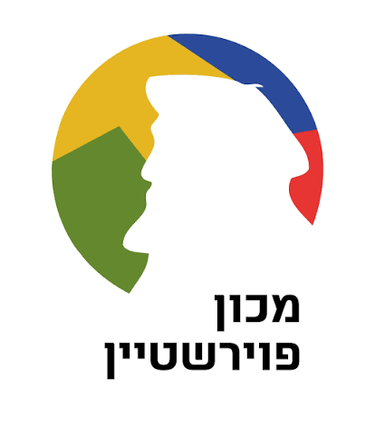

בחר/י את המערכת שברצונך לפתוח.
מסלול ההכשרה של 90 יום, התיק האישי עם המבחנים והמשובים, שיעורי העשרה חיים ומאגר הידע של המכון.
ניהול תפעול ארצי: המכונים, הדיווחים, כוח האדם, הרכש והקופה הקטנה, יומן המשימות והארכיון.